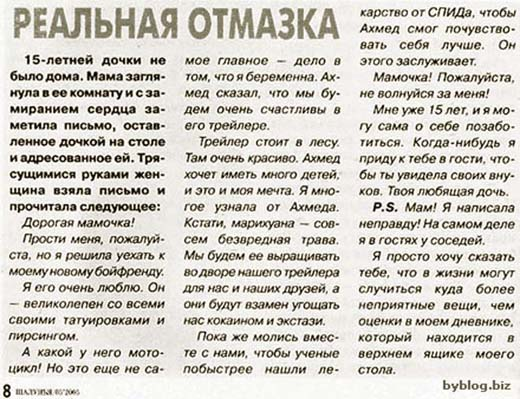

В НЛП есть такое понятие, как фрейм (англ. рамка). С его помощью мы можем формировать нужное нам отношение к любой информации. Незаменимый прием в PRе, рекламе, продажах, да и ввообще в любом убеждении людей. Фрейм, это рамка (или фон), в которой воспринимается информация. Фреймом является дополнительная информация, дающаяся параллельно или перед основной информацией, и задающая логические или эмоциональные рамки ее восприятия для формирования определенного отношения. Самый простой - визуальный фрейм. Представьте себе фотографию неизвестного вам лица. А теперь давайте поместим ее в розовую рамочку в форме сердечка. Даже если мы впервые видим эту фото, что мы можем подумать об этом человеке? А теперь представьте эту же фотографию на доске почета... в рубрике "Их разыскивает милиция"... :) Или в большой картинной раме, метр на метр, висящей посреди стены в зале для торжеств... Как мы начинаем воспринимать этого человека теперь? В зависимости от того, что мы делаем с рамкой, мы заставляем воспринимать эту фотографию в том или ином ключе, и относиться к ней соответствующе. Это были нарочито буквальные примеры, имеющие больше цель иллюстрирующую фреймы. В жизни, кончено, все более завуалированно. Примерно так... Предвыборная компания. Штаб. Политтехнологи, раскручивающие своего кандидата в народолюбцы. Готовятся к размещению в СМИ фотографии этого кандидата: одна, где кандидат общается с радостными студентами с улыбающимися лицами, другая, где он рядом с хорошо одетыми стариками выражающими почтение в глазах, третья - на фоне шикарного города с чистыми улицами, красивыми женщинами и дорогими машинами под голубым солнечным небом... Пять-десять разных фотографий с одним и тем же человеком, у которых есть что-то общее... что-то неуловимое сознанию, но приятное глазу и милое сердцу :) Так создаются визуальные фреймы, формирующие нужное нам отношение к субьекту на бессознательном уровне. Но самое интересное начинается, когда мы подходим к вербальным (речевым) фреймам... Представьте себе рекламную статью, которая начинается так: "Самые теплые куртки делает фирма Х! Такая морозоустойчивость обеспечивается...(далее сама статья)". Насколько вам интересна эта статья, если вы живете в средней полосе? Скажем, "ну так...". А теперь давайте добавим в начало статьи одно предложение: "В этом году синоптики обещают особенно холодную зиму. Самые теплые куртки делает фирма Х! Такая морозоустойчивость обеспечивается...". Как на этот раз? Тема стала актуальной, а все что мы для этого сделали, это добавили фрейм контекста - "особенно холодную зиму", который на секундочку перенс читателя в те условия, где это важно. Помимо контекстуальных фреймов, еще бывают эмоциональные фреймы. Самый забавный пример использования эмоционалного фрейма мне вчера прислали по почте. Спасибо большое Сергею, пример такой, что не могу не поделиться! Публикую прямо в исходном виде.  Теперь вы знаете, что такое фреймы и как они работают, а значит можете их, как минимум, обнаруживать. Создавать их и заменять один фрейм другим (техника вербального рефрейминга) несколько сложнее, но этому тоже можно научиться. Ну а высший пилотаж в использовании фреймов, это Раскрутки убеждений - техники вербального рефрейминга, очень мощного и способного менять убеждения. Виртуозное владение Раскрутками убеждений, когда вы их применяете в разговоре свободно, на автоматизме, практически не замечается собеседником, но при этом вносит сильнейшие изменения в его убеждения и мировоззрение. Этот уровень в НЛП считается мастерским и его невозможно достичь, не освоив базовые техники коммуникации. Но все не так сложно, как кажется... Егор Булыгин,
Обучиться всем основным техникам коммуникации и овладеть Раскрутками убеждений на мастерском уровне (до автоматизма) множно с помощью индивидуального интернет-курса НЛП "Искусство Убеждать". Подробнее о курсе...
тренер НЛП
18.10.2005
(function() {
window._pa = window._pa || {};
// _pa.orderId = "myOrderId"; // OPTIONAL: attach unique conversion identifier to conversions
// _pa.revenue = "19.99"; // OPTIONAL: attach dynamic purchase values to conversions
// _pa.productId = "myProductId"; // OPTIONAL: Include product ID for use with dynamic ads
var pa = document.createElement('script'); pa.type = 'text/javascript'; pa.async = true;
pa.src = ('https:' == document.location.protocol ? 'https:' : 'http:') + "//tag.perfectaudience.com/serve/52fe1fb766eb2484d7000056.js";
var s = document.getElementsByTagName('script')[0]; s.parentNode.insertBefore(pa, s);
})();